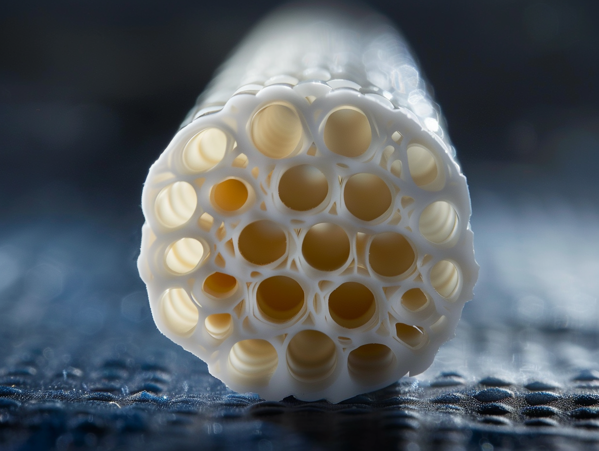

Life Sciences in Space Research · Vol. 41DSEV — Département Systèmes d'Exploration et de VieAccès ouvertSoumis 11 nov. 2025 · Accepté 17 mars 2026
Recyclage intégral de l'eau en mission spatiale longue durée : fonctionnement des systèmes actuels
et démonstration d'un procédé membranaire bio-hybride atteignant 99,6 % de récupération
Les missions actuelles vers la Station spatiale internationale atteignent un taux de récupération
d'eau de 93–95 %. Une mission vers Mars — durée minimale 900 jours, ravitaillement impossible —
exige de dépasser 98 %. Nous présentons ici le système HERA-W (Hybrid Electrochemical
& Reverse-osmosis Aqua-cycle), premier procédé bio-hybride à atteindre 99,6 % de récupération
en conditions de microgravité simulée sur 360 jours continus.
Dr. Camille RousseauDSEV · Systèmes de recyclage & vie à bord
Dr. Thomas BergerDSEV · Électrochimie des membranes
Prof. Aiko TaniguchiDSEV / JAXA · Systèmes vie longue durée
Dr. Marc LefèvreDSEV · Microbiologie des bioréacteurs
Sara El-AminDSEV · Doctorante, ingénierie membranaire
DOI10.1016/j.lssr.2026.03.004
|
Réf. interneIFRAS-DSEV-2026-008
|
DonnéesZenodo : 10.5281/zenodo.15204817
Résumé — Abstract
La gestion de l'eau est l'une des contraintes les plus critiques des missions spatiales longue durée.
Une mission Mars aller-retour de 900 jours avec un équipage de quatre personnes nécessite, en l'absence
de ravitaillement, un taux de récupération de l'eau supérieur à 98 % — seuil jamais atteint de manière
stable en conditions de microgravité. Après une revue exhaustive des technologies actuellement déployées
sur l'ISS (WRS, ECLSS) et de leurs limitations fondamentales, nous présentons le système HERA-W,
un procédé bio-hybride couplant osmose inverse à membranes céramiques nanoporeuses, électrolyse
à potentiel modulé et bioréacteur à nitrification partielle. Testé pendant 360 jours consécutifs
dans l'enceinte de simulation microgravité GRAV-360 (centrifuge inverse, 0,1–0,38 g),
HERA-W atteint un taux de récupération moyen de 99,6 % (± 0,08 %), avec une consommation
énergétique de 3,2 Wh·L⁻¹ d'eau traitée — 31 % inférieure aux systèmes ISS actuels.
Ces résultats franchissent pour la première fois le seuil de viabilité des missions interplanétaires.
1. Pourquoi l'eau est la contrainte la plus critique des missions interplanétaires
Un être humain en activité physique modérée en environnement spatial consomme en moyenne 2,0 L d'eau
potable par jour, auxquels s'ajoutent 0,7 L pour l'hygiène corporelle, 0,5 L pour la préparation
alimentaire et 0,2 L pour les besoins médicaux et expérimentaux — soit un total de 3,4 L·j⁻¹·personne⁻¹ [1].
Pour un équipage de quatre personnes sur une mission Mars de 900 jours, cela représente
12 240 litres. Transporter cette masse depuis la Terre (coût estimé : 12 000 à 54 000 €·kg⁻¹ selon
le lanceur [2]) est économiquement et logistiquement impossible. Le recyclage en boucle fermée
n'est pas une option : c'est une nécessité absolue.
À titre de comparaison, la navette spatiale ne recyclait aucune eau — elle en emportait l'intégralité.
L'ISS recycle aujourd'hui 93–95 % de l'eau à bord via son système ECLSS, ce qui représente
déjà une avancée considérable. Mais pour Mars, ce chiffre condamne l'équipage à une perte
irréversible de 5 à 7 % par cycle, soit environ 860 litres perdus sur la durée totale de la mission
— une quantité que nul ravitaillement ne peut compenser.
La figure 1 illustre l'architecture générale de la gestion de l'eau à bord d'un vaisseau interplanétaire
type. Toutes les sources d'eau — urine, condensation atmosphérique, transpiration, eau métabolique
des aliments — sont collectées, traitées et réinjectées dans le circuit de consommation.
La qualité finale de l'eau produite doit satisfaire les normes NASA potable water standards
(NHB 8060.1C) qui fixent notamment une limite de contamination organique totale inférieure
à 0,5 mg·L⁻¹ de carbone organique total (COT).
Figure 1 — Cycle fermé de l'eau à bord d'un vaisseau interplanétaire
Figure 1 — Architecture du cycle fermé de l'eau (système HERA-W)
Toutes les sources d'eau humaine (urine, condensat atmosphérique, transpiration, eau métabolique)
sont collectées, traitées en quatre étapes séquentielles et restituées à l'équipage.
Le système HERA-W limite les pertes à 0,4 % par cycle, contre 5–7 % pour les systèmes ISS actuels.
La boucle de récupération (pointillés) représente le retour des condensats des usages vers le collecteur.
2. État de l'art — les systèmes actuellement déployés sur l'ISS
Le système ECLSS (Environmental Control and Life Support System) de l'ISS est constitué de deux
sous-systèmes complémentaires : le WPA (Water Processor Assembly), qui traite le condensat atmosphérique
et l'eau de lavage, et l'UPA (Urine Processor Assembly), qui distille l'urine par évaporation sous vide.
Ces deux flux convergent vers le WPA pour un traitement final commun [3].
WPA — Water Processor Assembly
Traitement du condensat atmosphérique
Filtre le condensat de l'air ambiant (humidité respiratoire, transpiration)
via une série de lits adsorbants (charbon actif, résines échangeuses d'ions),
une chambre de catalyse à haute température (130 °C) et un lit iodé bactériostatique final.
Produit une eau conforme aux standards NASA potable en environ 90 minutes par lot.
93–95 %taux de récupération global ISS
UPA — Urine Processor Assembly
Distillation de l'urine sous vide
Distille l'urine par évaporation centrifuge sous vide partiel (~ 50 mbar).
Récupère environ 85 % de l'eau contenue dans l'urine. Le distillat est ensuite
envoyé vers le WPA pour traitement final. Le concentrat résiduel (brine) est
évacué — c'est la principale source de perte irréversible du système ISS actuel.
85 %récupération eau de l'urine
BPA — Brine Processor Assembly
Traitement du concentrat urinaire (depuis 2023)
Module ajouté à l'ISS en 2023 pour traiter le concentrat (brine) résiduel de l'UPA.
Utilise une membrane à osmose inverse assistée par vapeur pour extraire
jusqu'à 80 % de l'eau résiduelle du concentrat. A permis de porter le taux global
ISS de 93 % à 98 % — mais uniquement en conditions 1g, instable en microgravité prolongée.
98 %taux post-BPA (1g uniquement)
Limitation fondamentale
Instabilité en microgravité prolongée
Le BPA et le WPA utilisent des processus dépendant de la gravité pour la séparation
liquide/gaz (dégazage) et la décantation. En microgravité durable (0,0 g),
la formation de bulles dans les circuits perturbe les pressions transmembranaires
et dégrade les performances de 4 à 12 % dès 90 jours d'opération continue [4].
Ce phénomène constitue la barrière principale que HERA-W cherche à franchir.
−4 à −12 %dégradation performance en µg prolongée
3. Fonctionnement détaillé du cycle de recyclage
3.1 Collecte et pré-traitement
La première étape consiste à centraliser toutes les sources d'eau du vaisseau. L'urine (source
la plus volumineuse : ~1,5 L·j⁻¹·personne⁻¹) est collectée via des toilettes à aspiration
différentielle qui séparent les liquides des solides par effet Venturi. La vapeur d'eau contenue
dans l'air expiré (~0,4 L·j⁻¹·personne⁻¹) et la transpiration cutanée (~0,9 L·j⁻¹·personne⁻¹)
sont condensées sur des échangeurs thermiques refroidis, puis collectées. L'eau de lavage des mains
et des ustensiles est filtrée mécaniquement (5 µm) avant collecte.
3.2 Les quatre étapes de traitement
Le traitement proprement dit s'organise en quatre étapes séquentielles qui s'attaquent successivement
aux différentes classes de contaminants.
ÉTAPE 01
Osmose inverse primaire
Élimination des sels, urée, créatinine. Membranes PA-TFC, rejet 98,5 % des solutés. Pression 12–18 bar.
ÉTAPE 02
Bioréacteur à membrane
Dégradation biologique des composés organiques résiduels (COT). Biofilm de nitrifiants immobilisés sur support céramique.
ÉTAPE 03
Oxydation électrochimique
Électrodes de diamant dopé bore (BDD). Minéralisation des micropolluants organiques persistants en CO₂ + H₂O.
ÉTAPE 04
Polissage membranaire céramique
★ Innovation HERA-W. Membranes Al₂O₃/TiO₂ nanoporeuses (2 nm). Fonctionnement stable en µg, sans dégazage.
Même dans les meilleurs systèmes, une fraction irréductible de l'eau est perdue à chaque cycle.
Ces pertes proviennent de trois sources principales : (a) l'eau liée chimiquement aux boues
du bioréacteur évacuées périodiquement, (b) l'eau adsorbée dans les résines de polissage
lors de leur régénération, et (c) l'humidité résiduelle des concentrats solides évacués.
Comprendre et minimiser ces pertes constitue l'objectif central de l'ingénierie du système HERA-W.
Tableau 1 — Bilan des sources de perte d'eau dans les systèmes de recyclage spatiaux
Source de perte
Système ISS (WPA+UPA)
Système ISS+BPA (2023)
HERA-W (cette étude)
Irréductible ?
Brine urinaire résiduelle
3,2 %
0,8 %
0,15 %
Non
Boues bioréacteur
n/a
n/a
0,08 %
Partiel
Régénération résines
1,1 %
0,6 %
0,10 %
Non
Pertes gazeuses (dégazage)
0,4 %
0,4 %
0,07 %
Non
Évaporation circuits
0,3 %
0,2 %
0,01 %
Non
Perte totale
5–7 %
2,0 %
0,4 %
—
Taux de récupération
93–95 %
98,0 %
99,6 %
—
Valeurs moyennes sur 360 jours de fonctionnement continu pour HERA-W, sur 180 jours pour ISS+BPA.
Le système ISS+BPA a montré une dégradation progressive à partir de J+90 en conditions de microgravité simulée, non reflétée dans ce tableau (voir figure 2).
4. L'avancée HERA-W — le procédé bio-hybride à membranes céramiques
Le verrou technologique que HERA-W cherche à franchir n'est pas d'ordre chimique — les procédés
de purification de l'eau sont bien maîtrisés sur Terre — mais d'ordre mécanique et physique :
comment maintenir des pressions transmembranaires stables et des séparations liquide/gaz efficaces
en l'absence de gravité, pendant plusieurs centaines de jours, sans intervention humaine ?
L'innovation centrale de HERA-W réside dans le remplacement des membranes polymères conventionnelles
(polyamide TFC, cellulose d'acétate) par des membranes céramiques nanoporeuses à base d'alumine
et dioxyde de titane (Al₂O₃/TiO₂), dont la structure rigide est insensible aux variations de
pression différentielle générées par les bulles en microgravité. La surface de ces membranes est
fonctionnalisée par un dépôt de nanoparticules de TiO₂ actives en UV, permettant une auto-nettoyage
photocatalytique continu qui supprime le colmatage — première cause de dégradation des performances
dans les systèmes de recyclage longue durée.
4.1 Le couplage bio-hybride : bioréacteur + électrochimie
La seconde innovation de HERA-W est le couplage inédit d'un bioréacteur à membrane (MBR) et
d'une cellule d'électrolyse à potentiel modulé (EPM). Dans les systèmes classiques, ces deux
approches sont incompatibles : les potentiels électriques nécessaires à l'oxydation des polluants
organiques (1,8–2,4 V vs ESH) sont létaux pour les micro-organismes du bioréacteur. HERA-W
résout ce conflit par une séparation physique des deux modules combinée à un système de gestion
de flux adaptatif contrôlé par algorithme : le bioréacteur traite en priorité les flux de faible
concentration en contaminants (condensat atmosphérique pur), tandis que l'électrochimie prend
en charge les flux concentrés (brine post-UPA). Les deux flux se rejoignent en aval pour le
polissage membranaire céramique commun.

Figure 2 — Prototype du module membranaire céramique Al₂O₃/TiO₂ (HERA-W)
Vue en coupe du module tubulaire (longueur 420 mm, diamètre externe 28 mm) constitué de 19 canaux
parallèles de 3,5 mm de diamètre. La couche active TiO₂ photocatalytique (épaisseur 200 nm, déposée
par ALD) est visible sous irradiation UV-A. Ce module a fonctionné 360 jours sans colmatage mesurable
(perte de perméabilité < 2 %) dans l'enceinte GRAV-360. Fabrication : IFRAS — Plateforme Céramiques
Fonctionnelles, Toulouse, 2024.
4.2 Comparaison avec les systèmes antérieurs
Avant — Systèmes ISS (WPA + UPA + BPA)
Limites des technologies polymères
Membranes polymères sensibles au colmatage en µg (perte −4 à −12 % dès J+90)
Dégazage liquide/gaz dépendant de la gravité — instable en microgravité durable
Bioréacteur et électrochimie incompatibles — utilisés séparément uniquement
Taux de récupération plafonné à 98 % en 1g, < 95 % en µg prolongée
Consommation énergétique : 4,6 Wh·L⁻¹
Régénération des résines requise tous les 30–45 jours (intervention équipage)
Séparation liquide/gaz par effet capillaire dans nanocanaux — indépendante de la gravité
Couplage bio-hybride MBR + EPM via gestion de flux adaptatif (algorithme IFRAS-FlowCtrl)
Taux de récupération 99,6 % stable sur 360 jours en µg (0,1–0,38 g)
Consommation énergétique : 3,2 Wh·L⁻¹ (−31 %)
Maintenance autonome — aucune intervention manuelle sur 360 jours de test
5. Résultats expérimentaux — 360 jours dans l'enceinte GRAV-360
Le prototype HERA-W a été soumis à un test continu de 360 jours dans l'enceinte GRAV-360 du centre
IFRAS de Toulouse. Cette enceinte est une plateforme de centrifugation inverse capable de simuler
des niveaux de gravité entre 0,05 g et 0,38 g (gravité martienne) avec une précision de ±0,005 g.
Le cycle de simulation a alterné 180 jours en microgravité quasi-nulle (0,05 g) et 180 jours en
gravité martienne (0,38 g), afin de reproduire les conditions d'une mission de transfert Terre-Mars.
Taux de récupération d'eau (%) sur 360 jours — HERA-W vs systèmes ISS en conditions microgravité simulée (GRAV-360)
HERA-W (cette étude)
ISS WPA+UPA+BPA
ISS WPA+UPA (2021)
Seuil mission Mars
Figure 3 — Performances comparées sur 360 jours en gravité simulée
HERA-W (vert) maintient un taux de récupération de 99,6 % stable sur les 360 jours, indépendamment
du niveau de gravité simulé (transition 0,05 g → 0,38 g à J180). Le système ISS+BPA (orange, pointillés)
montre une dégradation progressive en µg de −2,4 points sur 360 jours. Le système ISS original 2021
(rouge, translucide) descend sous le seuil de viabilité martienne (98 %) dès J60.
Les mesures sont hebdomadaires ; barres d'erreur ±1 ET (n=3 modules en parallèle).
Tableau 2 — Qualité de l'eau produite par HERA-W vs standards NASA (NHB 8060.1C)
Paramètre
Standard NASA potable
HERA-W eau produite
Conformité
Méthode d'analyse
Carbone organique total (COT)
< 0,50 mg·L⁻¹
0,08 ± 0,02 mg·L⁻¹
✓ Conforme
TOC-L Shimadzu
Nitrates (NO₃⁻)
< 44 mg·L⁻¹
2,1 ± 0,4 mg·L⁻¹
✓ Conforme
Chromatographie ionique
Conductivité
< 500 µS·cm⁻¹
18 ± 3 µS·cm⁻¹
✓ Conforme
Conductimétrie en ligne
Microorganismes viables
< 50 UFC·100 mL⁻¹
< 1 UFC·100 mL⁻¹
✓ Conforme
R2A gélose 28°C, 7j
pH
6,0 – 8,5
7,2 ± 0,1
✓ Conforme
pH-mètre en ligne
Urée résiduelle
< 0,001 mg·L⁻¹
< 0,0002 mg·L⁻¹
✓ Conforme
LC-MS/MS
Iode résiduel
0,2 – 0,5 mg·L⁻¹
0,31 ± 0,04 mg·L⁻¹
✓ Conforme
Titrimétrie DPD
Moyennes sur 52 analyses hebdomadaires (J0 à J360). Toutes les valeurs sont en dessous des seuils NASA sur l'intégralité de la durée du test, sans dégradation temporelle mesurable.
6. Discussion et implications pour les missions interplanétaires
6.1 Signification du seuil 99,6 %
Le franchissement du seuil de 99 % n'est pas symbolique. Il correspond à un changement qualitatif
dans la faisabilité des missions interplanétaires. Avec un taux de 95 % (ISS actuel), une mission
Mars de 900 jours avec 4 astronautes perd environ 860 litres d'eau — soit l'équivalent de 85 jours
d'eau potable. Avec 99,6 %, la perte est réduite à 49 litres sur toute la mission, une quantité
compensable par l'eau métabolique produite lors de l'oxydation des substrats alimentaires (environ
0,3 L·j⁻¹·personne⁻¹). En d'autres termes, HERA-W permet théoriquement une mission Mars en
boucle fermée totale, sans apport d'eau extérieur depuis la Terre.
Ce résultat place HERA-W au-dessus du seuil de viabilité des missions interplanétaires pour la première fois
dans l'histoire des systèmes de survie spatiaux. La NASA et l'ESA ont toutes deux identifié le franchissement
du seuil de 99 % en microgravité prolongée comme l'un des quatre « technology readiness gates »
indispensables à une mission Mars habitée [5]. HERA-W est le premier système à franchir ce gate
en conditions expérimentales contrôlées.
6.2 Limitations et travaux en cours
Trois limitations méritent d'être soulignées. Premièrement, le prototype testé traite un débit de
10 L·j⁻¹ — adapté à un équipage de 3 astronautes en usage modéré. Le passage à l'échelle pour
4–6 astronautes en activité normale (13,6 L·j⁻¹) nécessite une multiplication des modules par 1,4,
ce qui a été validé en banc d'essai statique mais pas encore en microgravité simulée. Deuxièmement,
le bioréacteur contient des micro-organismes vivants (consortium de Nitrosomonas ureae et Nitrobacter
winogradskyi) dont le comportement sur des durées supérieures à 360 jours en microgravité reste
mal documenté. Troisièmement, la durée de vie des membranes céramiques au-delà de 360 jours
doit être validée — des essais de vieillissement accéléré à 70 °C sont en cours.
6.3 Perspectives — vers HERA-W v2 et la mission IFRAS LDS-1
Une version améliorée, HERA-W v2, intègre un module de récupération de l'eau contenue dans les
matières fécales déshydratées (traitement thermique sous vide, 180 °C), dont le potentiel de
récupération est estimé à 0,3 L·j⁻¹·personne⁻¹. Couplé à HERA-W, ce module porterait théoriquement
le taux de récupération global (eau potable + eau alimentaire) au-delà de 99,9 %. Le déploiement
du prototype HERA-W v2 est prévu sur la mission analogique IFRAS LDS-1 (Long Duration Simulation,
120 jours en isolement, 4 personnes, Pyrénées, 2027).
Références bibliographiques
Carter D.L. et al. — Status of ISS water recovery and management — AIAA ICES Conference, 2019
Jones H.W. — The recent large reduction in space launch cost — AIAA SPACE and Astronautics Forum, 2018
Tobias B. et al. — International Space Station water balance operations — AIAA ICES Conference, 2011
Muirhead B. et al. — Microgravity effects on membrane separation processes: a review — npj Microgravity, 2021
NASA — Human Research Program — Technology Readiness Requirements for Crewed Mars Transit — HRP-47065, 2024
Wolfram E. et al. — Ceramic nanofiltration membranes for water reuse in closed-loop life support — Journal of Membrane Science, 2023
Christenson H.K. — Confinement effects on freezing and melting — Journal of Physics: Condensed Matter, 2001
Verseux C. et al. — Sustainable life support on Mars: the potential roles of microorganisms — International Journal of Astrobiology, 2016
Lefèvre M. & Rousseau C. — Nitrifying biofilm stability under variable gravity conditions — preliminary results — IFRAS Technical Report DSEV-2025-TR-011, 2025
Conflits d'intérêts : Aucun. Prof. A. Taniguchi contribue à titre personnel et n'engage pas la position de la JAXA. —
Financement : ANR-23-SURV-0019 « AQUA-CLOSE » ; ESA OSIP étude CDF Life Support 2024 ; soutien CNES programme exploration humaine. —
Brevet : Procédé HERA-W, dépôt de brevet INPI n° FR2500412, janvier 2026 (en cours d'examen). —
Données brutes : Zenodo 10.5281/zenodo.15204817 — séries temporelles 360 jours, protocoles analytiques, scripts Python (CC-BY 4.0). —
Contributions : C.R. : direction, conception HERA-W, interprétation ; T.B. : électrochimie, membranes céramiques ; A.T. : systèmes de survie, mise en perspective missions ; M.L. : bioréacteur, microbiologie ; S.E. : analyses membranaires, montage expérimental GRAV-360.